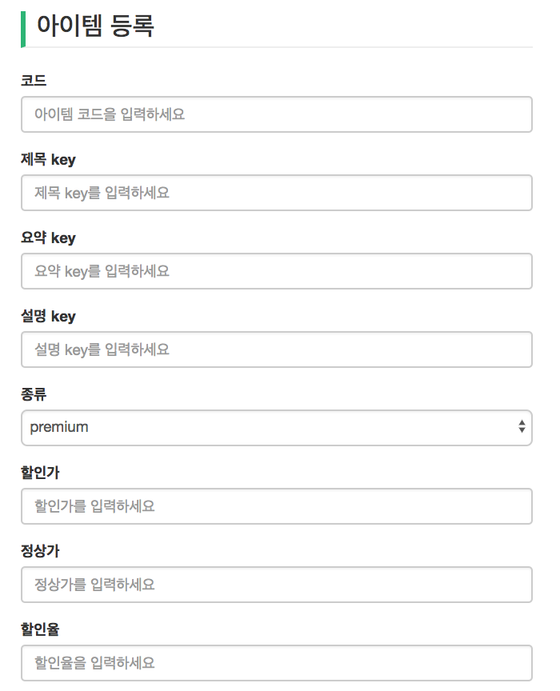
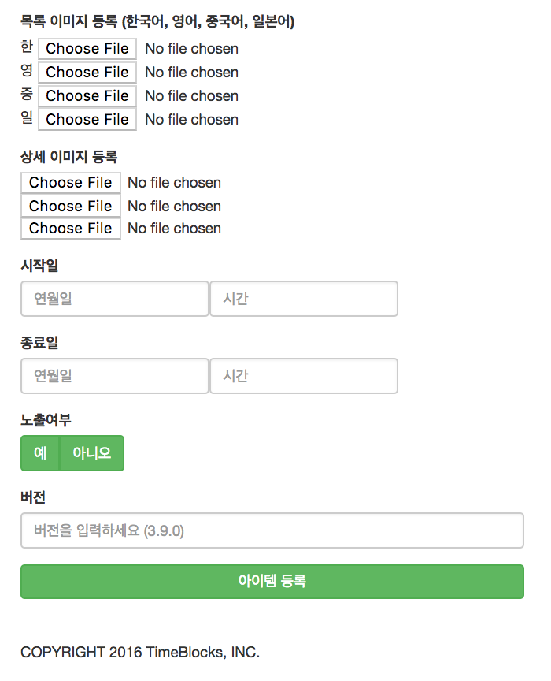

Analytics for Developers
By using MySQL database as the backend, I connected to the server to add and graph the datasets. I accessed databases based Item and used HTML/CSS in order to create pages for the Item adding forms, Item view tables, and Item detail pages. After creating web pages, I used MySQL queries to extract information on daily and weekly intervals. Along with those queries, I used JQuery to generate charts and graphs for the clients to easily view the datasets on their demands. Since the company is only partnering with Korean clients, all the screenshots are in Korean.
Programming
- MySQL
- Java
- HTML/CSS
- JQuery
Tools
- Eclipse
- MySQL Workbench
- MVC
- Spring Boot
- ThymeLeaf


Item List and Item Review List
Before jumping straight into backend, I started by understanding the architecture of Model-View-Controller. Since I had to use Spring Boot, Eclipse, Java, and ThymeLeaf, I spent a few days learning about the frameworks and the programs. After grasping the knowledge, I moved onto the clients page and the SQL database. I specifically worked on the item columns from the side navigation bar. I had to begin with creating an Item Controller in the server that connects all models and viewers. After the controller, I created models and viewers based off the SQL database. The first page that I worked on was an overall item listview with the columns pulled straight from the SQL database and a button that leads to the list of reviews for the item. After working on the item listview, I coded the item review list, which was a very similar process as item listview but separate viewer.
1. Item Register - 1st half
2. Item Register - 2nd half
3. Item Detail - 1st half

4. Item Detail - 2nd half

Item Register and Item Detail Pages
After creating the list pages, I moved onto working on the item register and detail pages, which are pages where users can edit and create items as clients. Both pages were forms to create database on the specific item that would eventually register the item on the item store within the app. I mainly used the structure that was already created and pulled those formats to design these pages. Item register page is a page for clients to register their items into the database. The form asks the client to input the banner image in four different languages: Korean, English, Chinese, and Japanese. The item detail page acts like an edit page but with few disabled inputs that act as keys to distinguish each items. Both pages have very similar structure since one page functions as editing the other. Thus the work was iterative. There were six types of input: text, number, blocked, drop-down, date, and file upload.
1. Table of Recommended Events

2. Graph of Recommended Events in Daily Intervals (smooth graph)

3. Graph of Recommended Events in Daily Intervals

4. Graph of Recommended Events in Weekly Intervals

Data Visualization for Recommended Events
Based on the MySQL database for "Recommended Events" they’ve already had, I created an analytics page where clients can view the statistics and a graph of the statistics. The page had queries for different intervals where the clients can select a specific time frame and the intervals (daily/weekly/monthly). The segments of the graph would change according to those choices. I used Chart.js and MySQL queries to create graphs and connect the tables with the database. The user can deselect any keys from the five categories (views, clicks, click through rate, number of scraps, scrap rates) on the graph and the graph will modify its default view depending on those selected categories.